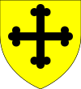

Aged 63
- Joan (1033–1106)
- Herbert II (1035–1087)
- Paul (1036–1092)
- Beatrix (1038–1089)
- Peter (1040–1097)
1000–1022 (22)
Inbreeding: 0%
In 1000 he married fifteen-year-old Joan; wedlock produced a son:| Name | Prt. | CoA | Lifespan | Notes |
|---|---|---|---|---|
| Michael I | |
1007–1070 Aged 63 |
Married Alice Montagu in 1028
|
1022–1070 (48)
Inbreeding: 0%, 1
In 1028 he married fourteen-year-old Alice Montagu, first daughter of Paul Montagu; happy couple produced five children:| Name | Prt. | CoA | Lifespan | Notes |
|---|---|---|---|---|
| Joan |  | 1033–1106 Aged 73 |
Married Walter East in 1048
| |
| Herbert II |  |
1035–1087 Aged 52 |
Married Gunnilda Partington in 1070
| |
| Paul | |
1036–1092 Aged 56 |
Wives:
| |
| Beatrix | 1038–1089 Aged 51 |
Married Jordan Partington in 1054
| ||
| Peter | |
1040–1097 Aged 57 |
Married Gunnilda Dalkeith in 1092
|
1070–1087 (17)
Inbreeding: 0%, 2
In 1070 he married twenty-year-old Gunnilda Partington, first daughter of Ioco Partington; union produced two children, yet only one survived:| Name | Prt. | CoA | Lifespan | Notes |
|---|---|---|---|---|
| Michael II | |
1071–1129 Aged 58 |
Married Beatrix Newton in 1096 | |
| Alice | 1075–1081 Aged 6 |
1087–1129 (42)
Inbreeding: 0%, 3
In 1096 he married twenty-one-year-old Beatrix Newton, third daughter of Adelard Didcot; marriage was childless.1129–1130 (1)
Inbreeding: 0%, 3
In 1096 he married thirteen-year-old Emma East, third daughter of Richeman East; wedlock produced four children, of which three survived:| Name | Prt. | CoA | Lifespan | Notes |
|---|---|---|---|---|
| Milo I |  |
 |
1100–1156 Aged 56 |
Married Ida Hemsworth in 1126
|
| Emma | 1120–1121 Aged 1 |
|||
| Walter |  |
1122–1179 Aged 57 |
Married Alma Hemsworth in 1147
| |
| Richeman | |
1124–1170 Aged 46 |
Married Alice Hemsworth in 1159
|
1130–1156 (26)
Inbreeding: 29%, 4
In 1126 he married thirteen-year-old Ida Hemsworth, natural daughterPaul Hemsworth; marriage produced fourteen children, yet only five survived:| Name | Prt. | CoA | Lifespan | Notes |
|---|---|---|---|---|
| Avice |  |
1130–1143 Aged 13 |
Married Lagot Hemsworth in 1143 | |
| Milo | 1133–1138 Aged 5 |
|||
| Edward | 1134–1135 Aged 1 |
|||
| Walter |  |
|
1135–1188 Aged 53 |
Married Alice Montagu in 1154
|
| Gilbert | |
1136–1151 Aged 15 |
||
| William | 1137–1199 Aged 62 |
Married Avice Brierley in 1161
| ||
| Godfrey | 1138–1141 Aged 3 |
|||
| Emma | 1141 Aged 0 |
|||
| Godfrey | |
1143–1193 Aged 50 |
Married Katherine Brierfield in 1182 | |
| Richeman | 1147–1153 Aged 6 |
|||
| Amica | 1151–1152 Aged 1 |
|||
| Emma |  |
1152–1208 Aged 56 |
Husbands:
| |
| Avice | 1154–1156 Aged 2 |
|||
| Edward | |
1155–1206 Aged 51 |
Married Katherine Brierfield in 1193 |
1156–1188 (32)
Inbreeding: 13%, 5
In 1154 he married thirteen-year-old Alice Montagu, first daughter of Lagot Montagu; joyless union produced three children, yet only one survived:| Name | Prt. | CoA | Lifespan | Notes |
|---|---|---|---|---|
| Amica | 1169–1180 Aged 11 |
|||
| William | |
|
1179–1233 Aged 54 |
Wives:
|
| Gilbert | 1185 Aged 0 |
1188–1233 (45)
Inbreeding: 7%, 5
In 1197 he married thirteen-year-old Alice Montagu, third daughter of Lagot Montagu; happy union produced a son, but he didn't survive:| Name | Prt. | CoA | Lifespan | Notes |
|---|---|---|---|---|
| Reginald | 1200–1212 Aged 12 |
| Name | Prt. | CoA | Lifespan | Notes |
|---|---|---|---|---|
| Gilbert II | |
|
1207–1266 Aged 59 |
Wives:
|
| Amica | 1209–1216 Aged 7 |
|||
| Emma |  |
 |
1210–1261 Aged 51 |
Married Simon Dalkeith in 1248
|
| Avice | 1211–1213 Aged 2 |
1233–1266 (33)
Inbreeding: 0%, 5
In 1225 he married thirteen-year-old Gunnilda Lyne, third daughter of Theobald Partington; matrimony produced six children, yet only two survived:| Name | Prt. | CoA | Lifespan | Notes |
|---|---|---|---|---|
| Emma | 1236–1238 Aged 2 |
|||
| Amica | |
 |
1239–1256 Aged 17 |
Married Noah Wesham in 1253 |
| Richeman | |
|
1241–1291 Aged 50 |
Married Avice Taunton in 1259
|
| Milo | 1246–1248 Aged 2 |
|||
| Edward | 1246–1248 Aged 2 |
|||
| Emma |  |
 |
1247–PRSN Aged 52 |
Married Walter Taunton in 1260 |
1266–1291 (25)
Inbreeding: 0%, 5
In 1259 he married thirteen-year-old Avice Taunton, first daughter of Gilbert Taunton; happy couple produced five children, of which three survived:| Name | Prt. | CoA | Lifespan | Notes |
|---|---|---|---|---|
| William | 1269–1282 Aged 13 |
|||
| Emma | |
1276–PRSN Aged 23 |
Married Alwin Keswick in 1289 | |
| Amica | |
1278–PRSN Aged 21 |
||
| Milo II | |
|
1279–PRSN Aged 20 |
Married Alice Montagu in 1297 |
| Avice | 1286–PRSN Aged 13 |
1291–PRSN (9)
Inbreeding: 7%, 5
In 1297 he married thirteen-year-old Alice Montagu, first daughter of Paul Montagu; union was childless.